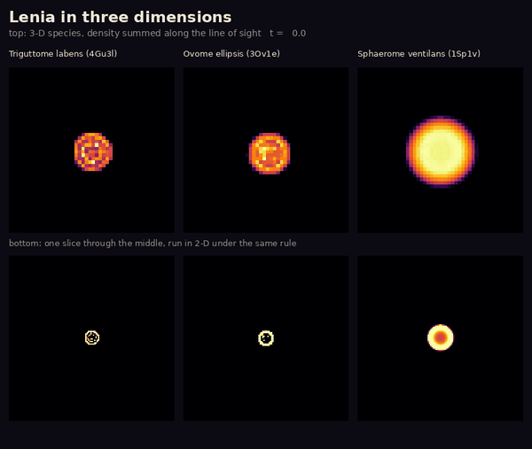
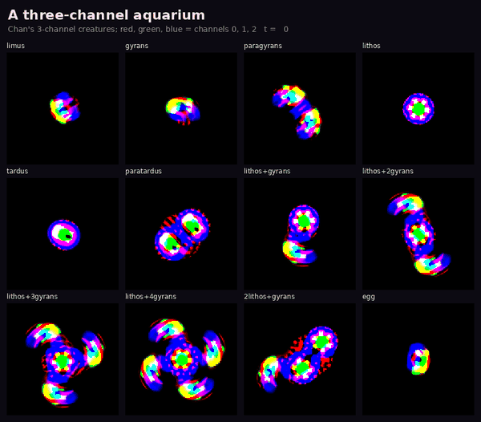

East wing · Other laws of physics · Room 9
More dimensions, more chemicals
The first eight rooms stay in one flat world with one chemical. The east wing changes the laws of physics. This room keeps Lenia's rule but gives it a third dimension, or three chemicals that feed each other. All the animals here were found and named by Bert Chan. What is ours is the engine they run in and the two tests: flattening a 3-D animal, and removing one of its chemicals.
Lenia in three dimensions

What you see. The 3-D animals keep their shape, and one glides. Their slices behave in three different ways. The glider's slice boils over into dust. The ellipsoid's slice shrinks to a small, steady ring, and the sphere's slice fades out.
What the ledger says. Our engine keeps 33 of Chan's 36 3-D species alive for 100 time units C069observed. Flattened, 42 of 101 slices die, 47 more than double their mass, and only 12 keep it C070observed. A 3-D animal is not a stack of 2-D animals.
A three-chemical aquarium

What you see. Twelve creatures that swim, spin or sit still, all under one set of fifteen kernels. The compound ones hold together like molecules.
What the ledger says. All twelve survive a tenfold smaller timestep. Remove any one of the three chemicals and every creature dies within 200 time units C071observed. No chemical is optional, though this test also removes a third of the mass, and a mass-matched control has not been run.
Caveat. Our engine follows Chan's own code, read line by line, and agrees with our classic simulator to twelve decimal places in the flat, single-chemical case. It has not yet been run side by side with Chan's code on these animals.